This package contains examples that demonstrate the usage of the components of the Electrical.Digital library.
The examples are simple to understand. They will show a typical behavior of the components, and they will give hints to users.
Extends from Modelica.Icons.ExamplesPackage (Icon for packages containing runnable examples).
| Name | Description |
|---|---|
| 4 to 1 Bit Multiplexer Example | |
| Pulse Triggered Master Slave Flip-Flop | |
| Adding circuit for binary numbers without input carry bit | |
| Full 1 Bit Adder Example | |
| 4 Bit Adder Example | |
| 3 Bit Counter Example | |
| Generic N Bit Counter Example | |
| Vector delay | |
| Pulse triggered D-Register-Bank, high active reset | |
| Pulse triggered D-Register-Bank, low active reset | |
| Pulse triggered D-Register-Bank, high active set and reset | |
| Pulse triggered D-Register-Bank, low active set and reset | |
| Level sensitive D-Register-Bank, high active reset | |
| Level sensitive D-Register-Bank, low active reset | |
| Level sensitive D-Register-Bank, high active set and reset | |
| Level sensitive D-Register-Bank, low active set and reset | |
| Functionality test of NXFERGATE | |
| Functionality test of NRXFERGATE | |
| Functionality test of BUF3S | |
| Functionality test of INV3S | |
| Functionality test of WiredX | |
| Utility components used by package Examples |
 Modelica.Electrical.Digital.Examples.Multiplexer
Modelica.Electrical.Digital.Examples.Multiplexer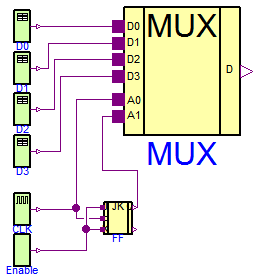
The multiplexer converts a parallel 4 bit signal in a sequential 1 bit stream. The multiplexer component is composed by basic gates. It can be found in the Utilities subpackage. The example is designed to test and demonstrate the basic gate components.
Extends from Modelica.Icons.Example (Icon for runnable examples).
model Multiplexer "4 to 1 Bit Multiplexer Example" import D = Modelica.Electrical.Digital; import L = Modelica.Electrical.Digital.Interfaces.Logic; extends Modelica.Icons.Example;D.Sources.Clock CLK(period=20); D.Sources.Table D0( y0=3, x={4,3,4,3}, t={50,100,145,200}); D.Sources.Table D1( y0=3, x={4,3,4,3}, t={22,140,150,180}); D.Examples.Utilities.MUX4 MUX; D.Sources.Table D2( y0=3, x={4,3,4,3}, t={22,140,150,180}); D.Sources.Table D3( y0=3, x={4,3,4,3}, t={22,140,150,180}); D.Examples.Utilities.JKFF FF; D.Sources.Set Enable; equationconnect(CLK.y, FF.clk); connect(Enable.y, FF.k); connect(Enable.y, FF.j); connect(CLK.y, MUX.a0); connect(D0.y, MUX.d0); connect(D1.y, MUX.d1); connect(D2.y, MUX.d2); connect(D3.y, MUX.d3); connect(FF.q, MUX.a1); end Multiplexer;
Modelica.Electrical.Digital.Examples.FlipFlop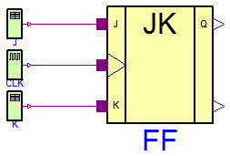
A pulse-triggered master-slave flip-flop is demonstrated. The flipflop component is composed by basic gates. It can be found in the Utilities subpackage. The example is designed to test and demonstrate the basic gate components.
Extends from Modelica.Icons.Example (Icon for runnable examples).
model FlipFlop "Pulse Triggered Master Slave Flip-Flop" import D = Modelica.Electrical.Digital; import L = Modelica.Electrical.Digital.Interfaces.Logic; extends Modelica.Icons.Example;D.Examples.Utilities.JKFF FF; D.Sources.Clock CLK(period=10); D.Sources.Table J( y0=3, x={4,3,4,3}, t={50,100,145,200}); D.Sources.Table K( y0=3, x={4,3,4,3}, t={22,140,150,180}); equationconnect(J.y, FF.j); connect(CLK.y, FF.clk); connect(K.y, FF.k); end FlipFlop;
Modelica.Electrical.Digital.Examples.HalfAdder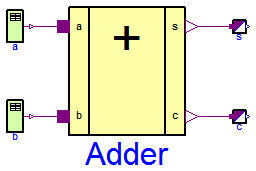
This example demonstrates an adding circuit for binary numbers, which internally realizes the interconnection to And and to Xor in the final sum.
a b c s t 1 0 1 0 1 0 1 1 0 2 1 1 0 1 3 0 0 0 0 4
t is the pick-up instant of the next bit(s) in the simulation. The simulation stop time should be 5 seconds.
Extends from Modelica.Icons.Example (Icon for runnable examples).
model HalfAdder "Adding circuit for binary numbers without input carry bit" import Modelica.Electrical.Digital; extends Modelica.Icons.Example;Modelica.Electrical.Digital.Sources.Table a( t={1,2,3,4}, x={4,3,4,3}, y0=3); Modelica.Electrical.Digital.Sources.Table b( x={4,3}, t={2,4}, y0=3); Modelica.Electrical.Digital.Examples.Utilities.HalfAdder Adder(delayTime=0.3); Modelica.Electrical.Digital.Converters.LogicToReal s; Modelica.Electrical.Digital.Converters.LogicToReal c; equationconnect(b.y,Adder. b); connect(a.y,Adder. a); connect(Adder.s, s.x[1]); connect(Adder.c, c.x[1]); end HalfAdder;
Modelica.Electrical.Digital.Examples.FullAdder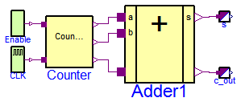
It is an adding circuit for binary numbers with input carry bit, which consists of two HalfAdders.
a.y, b.y and c.y are the inputs of the FullAdder.
cout = Or1.y and h.s are the outputs of the Fulladder.
t is the pick-up instant of the next bit(s) in the simulation.
a.y b.y c.y cout h.s t
1 0 0 0 1 1
0 1 0 0 1 2
0 0 1 0 1 3
1 1 0 1 0 4
0 1 1 1 0 5
1 0 1 1 0 6
1 1 1 1 1 7
0 0 0 0 0 8
The simulation stop time should be 10 seconds.
Extends from Modelica.Icons.Example (Icon for runnable examples).
model FullAdder "Full 1 Bit Adder Example" import D = Modelica.Electrical.Digital; import L = Modelica.Electrical.Digital.Interfaces.Logic; extends Modelica.Icons.Example;D.Examples.Utilities.FullAdder Adder1; D.Converters.LogicToReal s; D.Converters.LogicToReal c_out; D.Examples.Utilities.Counter3 Counter; D.Sources.Set Enable(x=L.'1'); D.Sources.Clock CLK; equationconnect(Adder1.s, s.x[1]); connect(Adder1.c_out, c_out.x[1]); connect(CLK.y, Counter.count); connect(Enable.y, Counter.enable); connect(Counter.q2, Adder1.a); connect(Counter.q1, Adder1.b); connect(Counter.q0, Adder1.c_in); end FullAdder;
 Modelica.Electrical.Digital.Examples.Adder4
Modelica.Electrical.Digital.Examples.Adder4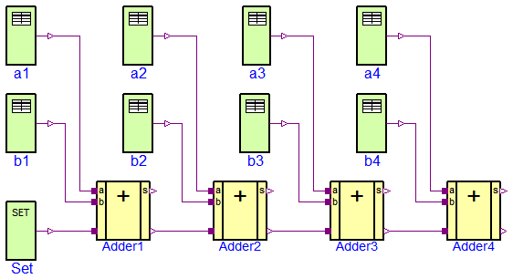
Four Fulladders are combined to built a four bit adder unit.
at t = 0 at t = 1 a 0 0 0 0 a 1 1 1 0 b + 0 0 0 0 b + 1 0 1 1 s 0 0 0 0 0 s 1 0 0 1 0 at t = 2 at t = 3 a 0 1 1 0 a 1 1 1 0 b + 0 0 1 1 b + 1 0 1 0 s 1 0 1 0 0 s 0 0 0 1 1 at t = 4 a 1 1 0 0 b + 1 1 1 0 s 0 0 1 0 1
To show the influence of delay a large delay time of 0.1s is choosen. Furthermore, all signals are initialized with U, the unitialized value. Please remember, that the nine logic values are coded by the numbers 1,...,9. The summands a and b can be found at the output signals of the taba and tabb sources. The result can be seen in the output signals of the Fulladders according to:
a a4.y a3.y a2.y a1.y
b b4.y b3.y b2.y b1.y
sum Adder4.c_out Adder4.s Adder3.s Adder2.s Adder1.s
The simulation stop time has to be 5s.
Extends from Modelica.Icons.Example (Icon for runnable examples).
model Adder4 "4 Bit Adder Example" import Modelica.Electrical.Digital; extends Modelica.Icons.Example;Modelica.Electrical.Digital.Sources.Table b4( y0=3, x={4,3}, t={1,3}); Modelica.Electrical.Digital.Sources.Table b1( x={4,3,4}, y0=3, t={1,2,3}); Modelica.Electrical.Digital.Sources.Table b2( y0=3, x={4}, t={4}); Modelica.Electrical.Digital.Sources.Table b3( y0=3, x={4}, t={1}); Modelica.Electrical.Digital.Sources.Table a1( y0=3, x={4,3,4}, t={1,2,3}); Modelica.Electrical.Digital.Sources.Table a2( y0=3, x={4}, t={1}); Modelica.Electrical.Digital.Sources.Table a3( y0=3, x={4,3}, t={1,4}); Modelica.Electrical.Digital.Sources.Table a4( y0=3, x={3}, t={1}); Modelica.Electrical.Digital.Sources.Set Set(x=3); Modelica.Electrical.Digital.Examples.Utilities.FullAdder Adder1; Modelica.Electrical.Digital.Examples.Utilities.FullAdder Adder2; Modelica.Electrical.Digital.Examples.Utilities.FullAdder Adder3; Modelica.Electrical.Digital.Examples.Utilities.FullAdder Adder4; equationconnect(b1.y, Adder1.b); connect(a1.y, Adder1.a); connect(Set.y, Adder1.c_in); connect(Adder1.c_out, Adder2.c_in); connect(Adder2.c_out, Adder3.c_in); connect(Adder3.c_out, Adder4.c_in); connect(b2.y, Adder2.b); connect(a2.y, Adder2.a); connect(b3.y, Adder3.b); connect(a3.y, Adder3.a); connect(b4.y, Adder4.b); connect(a4.y, Adder4.a); end Adder4;
 Modelica.Electrical.Digital.Examples.Counter3
Modelica.Electrical.Digital.Examples.Counter3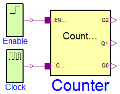
The three bit counter example is built up by components of the Utilities package which uses components of the Gates library.
The counter counts the high-low slopes of the clock signal, if the enable signal is set to be true. Otherwise if it is set to zero the counter is not counting.
Plot Counter.count (clock signal), and Counter.enable, and the output bit signals Counter.q0, Counter.q1, and Counter.q2.
Extends from Modelica.Icons.Example (Icon for runnable examples).
model Counter3 "3 Bit Counter Example" import D = Modelica.Electrical.Digital; extends Modelica.Icons.Example;D.Sources.Step Enable; D.Sources.Clock Clock; D.Examples.Utilities.Counter3 Counter; equationconnect(Enable.y, Counter.enable); connect(Clock.y, Counter.count); end Counter3;
Modelica.Electrical.Digital.Examples.Counter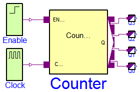
The counter example is built up by components of the Utilities package which uses components of the Gates library. It demonstrates the generic counter model. The parameter n is the number of counting bits. In this example it is set to 4.
The counter counts the high-low slopes of the clock signal, if the enable signal is set to be true. Otherwise if it is set to zero the counter is not counting.
Plot Counter.count (clock signal), and Counter.enable, and the output bit signals Counter.q[0], Counter.q[1], Counter.q[2], and Counter.q[3]
Extends from Modelica.Icons.Example (Icon for runnable examples).
model Counter "Generic N Bit Counter Example" import D = Modelica.Electrical.Digital; extends Modelica.Icons.Example;D.Sources.Step Enable; D.Sources.Clock Clock; D.Examples.Utilities.Counter Counter(n=4); D.Converters.LogicToReal Q0; D.Converters.LogicToReal Q1; D.Converters.LogicToReal Q2; D.Converters.LogicToReal Q3; equationconnect(Enable.y, Counter.enable); connect(Clock.y, Counter.count); connect(Q0.x[1], Counter.q[1]); connect(Q1.x[1], Counter.q[2]); connect(Q2.x[1], Counter.q[3]); connect(Q3.x[1], Counter.q[4]); end Counter;
Modelica.Electrical.Digital.Examples.VectorDelay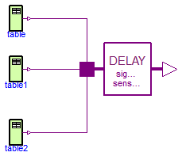
This example is a simple test of the vector valued sensitive delay component. The delay times are chosen different from each other. To examine the rersults plot bothe the input vector x and the output vector y.
Extends from Modelica.Icons.Example (Icon for runnable examples).
model VectorDelay "Vector delay" extends Modelica.Icons.Example;Modelica.Electrical.Digital.Delay.InertialDelaySensitiveVector delay( final tHL=1, final tLH=2, final n=3); Modelica.Electrical.Digital.Sources.Table table(x={3,4,3,4,3}, t={0,1,5,7,8}); Modelica.Electrical.Digital.Sources.Table table1(x={3,4}, t={0,1}); Modelica.Electrical.Digital.Sources.Table table2(x={3,4,3}, t={0,1,6}); equationconnect(table.y, delay.x[1]); connect(table1.y, delay.x[2]); connect(table2.y, delay.x[3]); end VectorDelay;
Modelica.Electrical.Digital.Examples.DFFREG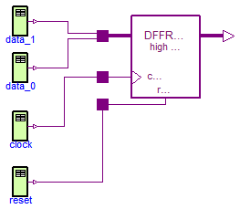
This example is a simple test of the Registers.DFFREG component. The data width is set to two. After simulation plot both the dataIn and the dataOut vectors. To verify the results compare the the truth table which is documented in the DFFREG component.
Extends from Modelica.Icons.Example (Icon for runnable examples).
model DFFREG "Pulse triggered D-Register-Bank, high active reset" extends Modelica.Icons.Example;Modelica.Electrical.Digital.Sources.Table clock(x={3,4,3,4,3,4,3}, t={0,7,8,10,11,15,16}); Modelica.Electrical.Digital.Sources.Table data_0(x={4,3}, t={0,12}); Modelica.Electrical.Digital.Sources.Table reset(x={3,4,3}, t={0,1,2}); Modelica.Electrical.Digital.Sources.Table data_1(t={0,10}, x={8,2}); Modelica.Electrical.Digital.Registers.DFFREG dFFREG( n=2, tHL=5, tLH=6); equationconnect(clock.y, dFFREG.clock); connect(reset.y, dFFREG.reset); connect(data_0.y, dFFREG.dataIn[1]); connect(data_1.y, dFFREG.dataIn[2]); end DFFREG;
Modelica.Electrical.Digital.Examples.DFFREGL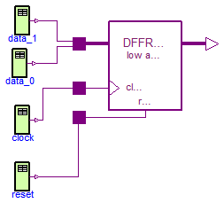
This example is a simple test of the Registers.DFFREGL component. The data width is set to two. After simulation plot both the dataIn and the dataOut vectors. To verify the results compare the the truth table which is documented in the DFFREGL component.
Extends from Modelica.Icons.Example (Icon for runnable examples).
model DFFREGL "Pulse triggered D-Register-Bank, low active reset" extends Modelica.Icons.Example;Modelica.Electrical.Digital.Sources.Table clock(x={3,4,3,4,3,4,3}, t={0,7,8,10,11,15,16}); Modelica.Electrical.Digital.Sources.Table data_0(x={4,3}, t={0,12}); Modelica.Electrical.Digital.Sources.Table reset(t={0,1,2}, x={4,3,4}); Modelica.Electrical.Digital.Sources.Table data_1(t={0,10}, x={8,2}); Modelica.Electrical.Digital.Registers.DFFREGL dFFREGL( n=2, tHL=5, tLH=6); equationconnect(reset.y, dFFREGL.reset); connect(clock.y, dFFREGL.clock); connect(data_0.y, dFFREGL.dataIn[1]); connect(data_1.y, dFFREGL.dataIn[2]); end DFFREGL;
Modelica.Electrical.Digital.Examples.DFFREGSRH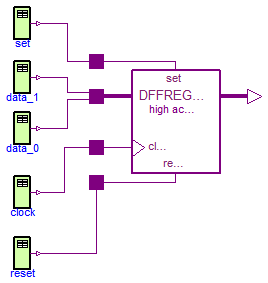
This example is a simple test of the Registers.DFFREGSRH component. The data width is set to two. After simulation plot both the dataIn and the dataOut vectors. To verify the results compare the the truth table which is documented in the DFFREGSRH component.
Extends from Modelica.Icons.Example (Icon for runnable examples).
model DFFREGSRH "Pulse triggered D-Register-Bank, high active set and reset" extends Modelica.Icons.Example;Modelica.Electrical.Digital.Sources.Table clock(x={3,4,3}, t={0,10,11}); Modelica.Electrical.Digital.Sources.Table data_0(x={6}, t={0}); Modelica.Electrical.Digital.Sources.Table reset(x={3,4,3}, t={0,1,2}); Modelica.Electrical.Digital.Sources.Table data_1(x={3}, t={0}); Modelica.Electrical.Digital.Sources.Table set(x={3,4,3}, t={0,5,6}); Modelica.Electrical.Digital.Registers.DFFREGSRH dFFREGSRH( tHL=2, tLH=3, n=2); equationconnect(clock.y, dFFREGSRH.clock); connect(set.y, dFFREGSRH.set); connect(reset.y, dFFREGSRH.reset); connect(data_0.y, dFFREGSRH.dataIn[1]); connect(data_1.y, dFFREGSRH.dataIn[2]); end DFFREGSRH;
Modelica.Electrical.Digital.Examples.DFFREGSRL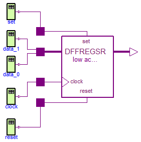
This example is a simple test of the Registers.DFFREGSRL component. The data width is set to two. After simulation plot both the dataIn and the dataOut vectors. To verify the results compare the the truth table which is documented in the DFFREGSRL component.
Extends from Modelica.Icons.Example (Icon for runnable examples).
model DFFREGSRL "Pulse triggered D-Register-Bank, low active set and reset" extends Modelica.Icons.Example;Modelica.Electrical.Digital.Sources.Table clock(x={3,4,3}, t={0,10,11}); Modelica.Electrical.Digital.Sources.Table data_0(x={6}, t={0}); Modelica.Electrical.Digital.Sources.Table reset(t={0,1,2}, x={4,3,4}); Modelica.Electrical.Digital.Sources.Table data_1(x={3}, t={0}); Modelica.Electrical.Digital.Sources.Table set(t={0,5,6}, x={4,3,4}); Modelica.Electrical.Digital.Registers.DFFREGSRL dFFREGSRL( tHL=2, tLH=3, n=2); equationconnect(reset.y, dFFREGSRL.reset); connect(clock.y, dFFREGSRL.clock); connect(set.y, dFFREGSRL.set); connect(data_0.y, dFFREGSRL.dataIn[1]); connect(data_1.y, dFFREGSRL.dataIn[2]); end DFFREGSRL;
Modelica.Electrical.Digital.Examples.DLATREG
This example is a simple test of the Registers.DLATREG component. The data width is set to two. After simulation plot both the dataIn and the dataOut vectors. To verify the results compare the the truth table which is documented in the DLATREG component.
Extends from Modelica.Icons.Example (Icon for runnable examples).
model DLATREG "Level sensitive D-Register-Bank, high active reset" extends Modelica.Icons.Example;Modelica.Electrical.Digital.Sources.Table enable(x={3,4,3}, t={0,10,18}); Modelica.Electrical.Digital.Sources.Table data_0(x={6,4}, t={0,15}); Modelica.Electrical.Digital.Sources.Table reset(x={3,4,3,4,3}, t={0,1,2,20,21}); Modelica.Electrical.Digital.Sources.Table data_1(x={3,4}, t={0,16}); Modelica.Electrical.Digital.Registers.DLATREG dLATREG( n=2, tHL=2, tLH=3); equationconnect(reset.y, dLATREG.reset); connect(enable.y, dLATREG.enable); connect(data_0.y, dLATREG.dataIn[1]); connect(data_1.y, dLATREG.dataIn[2]); end DLATREG;
Modelica.Electrical.Digital.Examples.DLATREGL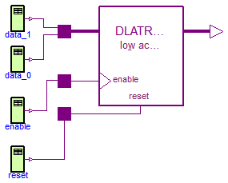
This example is a simple test of the Registers.DLATREGL component. The data width is set to two. After simulation plot both the dataIn and the dataOut vectors. To verify the results compare the the truth table which is documented in the DLATREGL component.
Extends from Modelica.Icons.Example (Icon for runnable examples).
model DLATREGL "Level sensitive D-Register-Bank, low active reset" extends Modelica.Icons.Example;Modelica.Electrical.Digital.Sources.Table enable(x={3,4,3}, t={0,10,18}); Modelica.Electrical.Digital.Sources.Table data_0(x={6,4}, t={0,15}); Modelica.Electrical.Digital.Sources.Table reset(t={0,1,2,20,21}, x={4,3,4,3,4}); Modelica.Electrical.Digital.Sources.Table data_1(x={3,4}, t={0,16}); Modelica.Electrical.Digital.Registers.DLATREGL dLATREGL( tHL=2, tLH=3, n=2); equationconnect(reset.y, dLATREGL.reset); connect(enable.y, dLATREGL.enable); connect(data_0.y, dLATREGL.dataIn[1]); connect(data_1.y, dLATREGL.dataIn[2]); end DLATREGL;
Modelica.Electrical.Digital.Examples.DLATREGSRH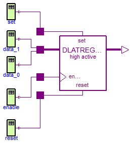
This example is a simple test of the Registers.DLATREGSRH component. The data width is set to two. After simulation plot both the dataIn and the dataOut vectors. To verify the results compare the the truth table which is documented in the DLATREGSRH component.
Extends from Modelica.Icons.Example (Icon for runnable examples).
model DLATREGSRH "Level sensitive D-Register-Bank, high active set and reset" extends Modelica.Icons.Example;Modelica.Electrical.Digital.Sources.Table enable(x={3,4,3}, t={0,10,18}); Modelica.Electrical.Digital.Sources.Table data_0(x={6,4}, t={0,15}); Modelica.Electrical.Digital.Sources.Table reset(x={3,4,3,4,3}, t={0,1,2,20,21}); Modelica.Electrical.Digital.Sources.Table data_1(x={3,4}, t={0,16}); Modelica.Electrical.Digital.Sources.Table set(x={3,4,3}, t={0,5,6}); Modelica.Electrical.Digital.Registers.DLATREGSRH dLATREGSRH( tHL=2, tLH=3, n=2); equationconnect(reset.y, dLATREGSRH.reset); connect(enable.y, dLATREGSRH.enable); connect(data_0.y, dLATREGSRH.dataIn[1]); connect(data_1.y, dLATREGSRH.dataIn[2]); connect(set.y, dLATREGSRH.set); end DLATREGSRH;
Modelica.Electrical.Digital.Examples.DLATREGSRL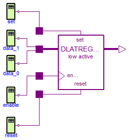
This example is a simple test of the Registers.DLATREGSRL component. The data width is set to two. After simulation plot both the dataIn and the dataOut vectors. To verify the results compare the the truth table which is documented in the DLATREGSRL component.
Extends from Modelica.Icons.Example (Icon for runnable examples).
model DLATREGSRL "Level sensitive D-Register-Bank, low active set and reset" extends Modelica.Icons.Example;Modelica.Electrical.Digital.Sources.Table enable(t={0,10,18}, x={3,4,3}); Modelica.Electrical.Digital.Sources.Table data_0(x={6,4}, t={0,15}); Modelica.Electrical.Digital.Sources.Table reset(t={0,1,2,20,21}, x={4,3,4,3,4}); Modelica.Electrical.Digital.Sources.Table data_1(x={3,4}, t={0,16}); Modelica.Electrical.Digital.Sources.Table set(t={0,5,6}, x={4,3,4}); Modelica.Electrical.Digital.Registers.DLATREGSRL dLATREGSRL( tHL=2, tLH=3, n=2); equationconnect(reset.y, dLATREGSRL.reset); connect(enable.y, dLATREGSRL.enable); connect(data_0.y, dLATREGSRL.dataIn[1]); connect(data_1.y, dLATREGSRL.dataIn[2]); connect(set.y, dLATREGSRL.set); end DLATREGSRL;
Modelica.Electrical.Digital.Examples.NXFER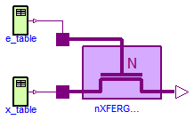
This example is a simple test of the Tristates.NXFERGATE component.
model NXFER "Functionality test of NXFERGATE"Modelica.Electrical.Digital.Sources.Table e_table( y0=Modelica.Electrical.Digital.Interfaces.Logic.'U', x={3,4,5}, t={0,5,9}); Modelica.Electrical.Digital.Sources.Table x_table( y0=Modelica.Electrical.Digital.Interfaces.Logic.'U', x={4,3}, t={1,7}); Modelica.Electrical.Digital.Tristates.NXFERGATE nXFERGATE( tHL=1, tLH=1); equationconnect(x_table.y, nXFERGATE.x); connect(e_table.y, nXFERGATE.enable); end NXFER;
Modelica.Electrical.Digital.Examples.NRXFER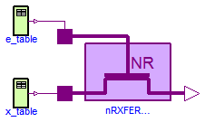
This example is a simple test of the Tristates.NRXFER component. After simulation until 12 s plot x, enable, and y of the nRXFERGATE component. To verify the result compare to the truth table NRXferTable.
model NRXFER "Functionality test of NRXFERGATE"Modelica.Electrical.Digital.Sources.Table e_table( y0=Modelica.Electrical.Digital.Interfaces.Logic.'U', x={3,4,5}, t={0,5,9}); Modelica.Electrical.Digital.Sources.Table x_table( y0=Modelica.Electrical.Digital.Interfaces.Logic.'U', x={4,3}, t={1,7}); Modelica.Electrical.Digital.Tristates.NRXFERGATE nRXFERGATE( tHL=1, tLH=1); equationconnect(x_table.y, nRXFERGATE.x); connect(e_table.y, nRXFERGATE.enable); end NRXFER;
Modelica.Electrical.Digital.Examples.BUF3S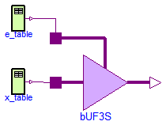
This example is a simple test of the Tristates.BUF3S component. After simulation until 12 s plot x, enable, and y of the bUF3S component. To verify the result compare to the truth table Buf3sTable.
model BUF3S "Functionality test of BUF3S"Modelica.Electrical.Digital.Sources.Table e_table( y0=Modelica.Electrical.Digital.Interfaces.Logic.'U', x={3,4,5}, t={0,5,9}); Modelica.Electrical.Digital.Sources.Table x_table( y0=Modelica.Electrical.Digital.Interfaces.Logic.'U', x={4,3}, t={1,7}); Modelica.Electrical.Digital.Tristates.BUF3S bUF3S( tHL=1, tLH=1, strength=Modelica.Electrical.Digital.Interfaces.Strength.'S_X01'); equationconnect(x_table.y, bUF3S.x); connect(e_table.y, bUF3S.enable); end BUF3S;
Modelica.Electrical.Digital.Examples.INV3S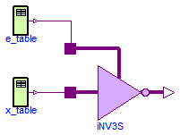
This example is a simple test of the Tristates.INV3S component. After simulation until 12 s plot x, enable, and y of the iNV3S component. To verify the result compare to the truth table T.UX01Table.
model INV3S "Functionality test of INV3S"Modelica.Electrical.Digital.Sources.Table e_table( y0=Modelica.Electrical.Digital.Interfaces.Logic.'U', x={3,4,5}, t={0,5,9}); Modelica.Electrical.Digital.Sources.Table x_table( y0=Modelica.Electrical.Digital.Interfaces.Logic.'U', x={4,3}, t={1,7}); Modelica.Electrical.Digital.Tristates.INV3S iNV3S; equationconnect(x_table.y, iNV3S.x); connect(e_table.y, iNV3S.enable); end INV3S;
Modelica.Electrical.Digital.Examples.WiredX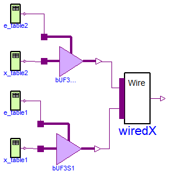
This example is a simple test of the Tristates.WiredX component. The input width is set to two. After simulation until 12 s plot x[1], x[2], and y of the WiredX component. To verify the result compare to the truth table Tables.ResolutionTable.
model WiredX "Functionality test of WiredX"Modelica.Electrical.Digital.Sources.Table e_table2( y0=Modelica.Electrical.Digital.Interfaces.Logic.'U', x={3,4,3}, t={0,3,9}); Modelica.Electrical.Digital.Sources.Table x_table2( y0=Modelica.Electrical.Digital.Interfaces.Logic.'U', x={4,3}, t={1,7}); Modelica.Electrical.Digital.Tristates.BUF3S bUF3S2( tHL=1, tLH=1, strength=Modelica.Electrical.Digital.Interfaces.Strength.'S_X01'); Modelica.Electrical.Digital.Sources.Table e_table1( y0=Modelica.Electrical.Digital.Interfaces.Logic.'U', t={0,3,9}, x={3,4,3}); Modelica.Electrical.Digital.Sources.Table x_table1( y0=Modelica.Electrical.Digital.Interfaces.Logic.'U', x={3,4,3}, t={1,5,7}); Modelica.Electrical.Digital.Tristates.BUF3S bUF3S1( tHL=1, tLH=1, strength=Modelica.Electrical.Digital.Interfaces.Strength.'S_X01'); Modelica.Electrical.Digital.Tristates.WiredX wiredX(n=2); equationconnect(x_table2.y, bUF3S2.x); connect(e_table2.y, bUF3S2.enable); connect(x_table1.y, bUF3S1.x); connect(e_table1.y, bUF3S1.enable); connect(bUF3S1.y, wiredX.x[1]); connect(bUF3S2.y, wiredX.x[2]); end WiredX;